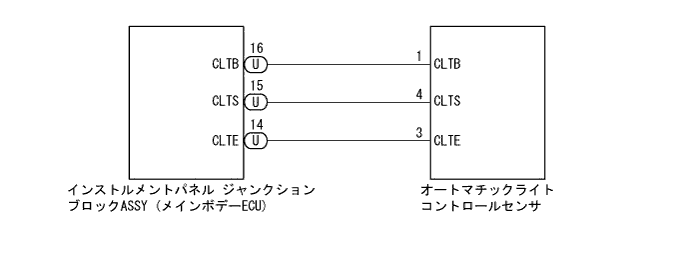
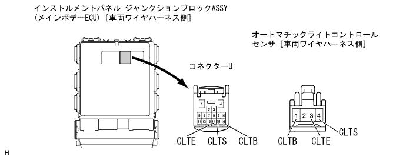
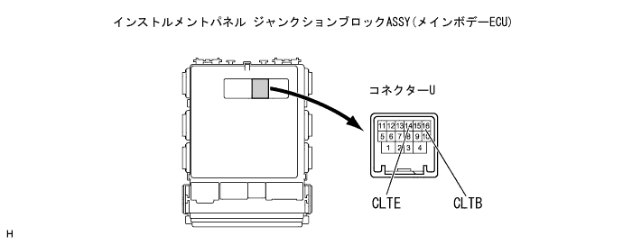
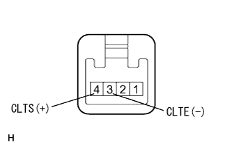

DTC B1244 Light Sensor Malfunction |
| DTC No. | Diagnosis Description
| Inspection Area |
|---|---|---|
| B1244 |
|
|

| Step 1 | Read TaSCAN Data |
Using SST (TaSCAN), follow the prompts on the screen to display the "ECU Data Monitor" screen and check the computer data.
| Item Name (Symbol) | Item Description/Display Range | Standard Value | Remarks |
|---|---|---|---|
| Light Sensor Illuminance Information (LSEN) | Automatic light control sensor status Display range: 0 to 235600 | Outputs a value according to brightness (unit: lx) | Displays 0 when there is no light |
| Result | Proceed to |
|---|---|
| NG | A |
| OK | B |
|
| ||||
| A | |
| Step 2 | Inspect Wire Harness and Connector (Instrument Panel Junction Block Assembly (Main Body ECU) - Automatic Light Control Sensor) |
for reference.Disconnect connector U of the instrument panel junction block assembly (main body ECU) and the automatic light control sensor connector.

Using SST (Toyota electrical tester), measure the resistance between the terminals of the vehicle side wire harness connectors.
| Tester Connection (Terminal Symbol) | Condition | Standard |
|---|---|---|
| U16(CLTB) - 1(CLTB) | Always | Below 1 Ω |
| U15(CLTS) - 4(CLTS) | Always | Below 1 Ω |
| U14(CLTE) - 3(CLTE) | Always | Below 1 Ω |
Using SST (Toyota electrical tester), measure the resistance between each terminal of the vehicle side wire harness connector and body ground.
| Tester Connection (Terminal Symbol) | Condition | Standard |
|---|---|---|
| U16 (CLTB) - Body ground | Always | 10 kΩ or higher |
| U15 (CLTS) - Body ground | Always | 10 kΩ or higher |
| U14 (CLTE) - Body ground | Always | 10 kΩ or higher |
|
| ||||
| OK | |
| Step 3 | Inspect Instrument Panel Junction Block Assembly |
Connect connector U of the instrument panel junction block assembly (main body ECU).
Using SST (Toyota electrical tester), measure the voltage between the terminals from the back side of the connector.

| Tester Connection (Terminal Symbol) | Condition | Standard |
|---|---|---|
| U16(CLTB) - U14(CLTE) | IG ON | 11 to 14 V |
|
| ||||
| OK | |
| Step 4 | Inspect Automatic Light Control Sensor |
Connect the automatic light control sensor connector.
 |
Using SST (TaSCAN), check that a waveform is generated between the terminals below.
| Inspection Terminals [Positive - Negative] | Condition | Standard |
|---|---|---|
| 4(CLTS) - 3(CLTE) | IG ON, light control switch AUTO | Pulse generation (waveform 1) |
 |
Waveform 1
| Item | Description |
|---|---|
| Tool Setting | 5V/DIV、5ms/DIV |
|
| ||||
| OK | ||
| ||